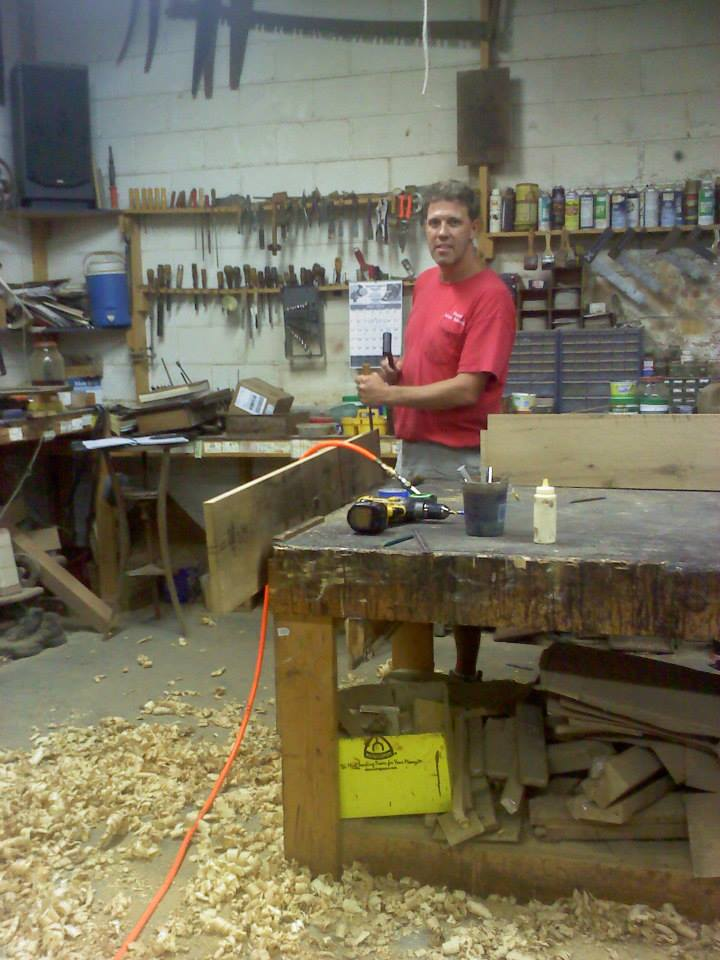

Nietert Antique Restorations is a full service workshop dedicated to historic fine furniture preservation and conservation as well as custom bench made furniture. Brad Nietert, after completing an extensive apprenticeship, started Nietert Antique Restorations in 1999. Whether working with 18th or 19th century furniture or creating a piece himself, bench made furniture is his passion. All repairs are done with historically correct techniques, and shellac is the finish of choice. The custom furniture is often made with 100 plus year old reclaimed lumber from Charleston homes or the interiors of Midwest barns. Brad assists Charleston's finest antique dealers and plantation owners as well as some of the East Coast's top interior designers.
